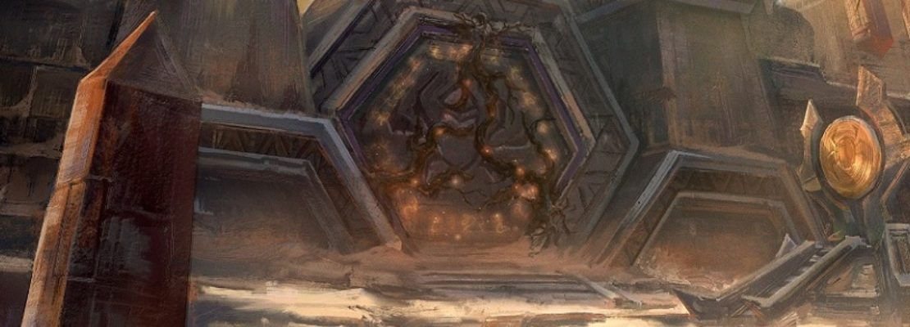

10/Julio/2020
Tras las puertas de Ahn’Qiraj se encuentran dos bandas únicas: las Ruinas de Ahn’Qiraj, para 20 personas, y el Templo de Ahn’Qiraj, para 40. A medida que los jugadores profundicen en los misterios de Ahn’Qiraj, descubrirán secretos sobre la plaga silítida y sus oscuros maestros, los qiraji. Para abrir las puertas de Ahn’Qiraj en su reino, tendrán que completar un evento del mundo de proporciones épicas.
Junto al evento de Ahn’Qiraj, las siguientes actualizaciones de contenido se desbloquearán con el reinicio semanal de las bandas en cada región la semana del 28 de julio:
Este parche incluye muchas correcciones de errores que se encontraron en la versión 1.12 de World of Warcraft. Como estos errores no eran intencionados entonces, se han corregido ahora:
Desde antes del lanzamiento de WoW Classic , nos hemos preocupado mucho por replicar la experiencia original, intentando eliminar al mismo tiempo todas las amenazas contra las cuentas. Sin embargo, no hemos podido eliminarlas todas y, lamentablemente, muchos jugadores de WoW Classic aún no han tomado medidas para proteger su cuenta con un Authenticator ni activado las alertas de móvil. Esto provoca problemas cuando su cuenta se ve comprometida y tienen que ponerse en contacto con el equipo de Asistencia de Blizzard para resolver la situación.
En este parche vamos a activar cuatro casillas más en las mochilas de los jugadores que tengan un Authenticator vinculado a su cuenta de WoW Classic y las alertas de móvil activadas. Para preservar la experiencia inicial de los jugadores noveles de WoW Classic , no se les comunicará nada al respecto a través del juego hasta que lleguen a nivel 20. Los que ya tengan vinculado un Authenticator a su cuenta de WoW y las alertas de móvil activadas tendrán a su disposición cuatro casillas en la mochila cuando inicien sesión en la versión 1.13.5, y los que no, verán el símbolo «+» en la mochila para recordarles que tienen que proteger la cuenta para obtener esta recompensa.
Reconocemos que esto supone un cambio significativo con respecto al WoW original. La seguridad de las cuentas es muy importante para nosotros y queremos que la recompensa por proteger la cuenta se vea reflejada en WoW Classic , al igual que ha pasado en World of Warcraft durante muchos años.
Últimamente hemos constatado un aumento de tráfico en el chat debido a addons que sincronizan datos entre sus usuarios. Aunque la gran mayoría de estos addons lo hacen de manera responsable, hay otros que pueden causar problemas, hasta el punto de perjudicar a todos los jugadores. En el pasado ya implementamos una corrección en vivo en el servidor del juego para regular el chat, pero durante nuestras investigaciones, hemos descubierto circunstancias habituales que podemos mejorar para los autores de addons .
Amenaza
La comunidad ha resuelto en gran medida los cálculos de amenaza y ha creado herramientas sólidas para mostrarlos en el juego. Nos gustaría mejorar los API de los addons para que muestren estos datos en un addon sin necesidad de aumentar mucho el tráfico en el chat.
Mayor alcance del registro de combate
En un principio restringimos el alcance del registro de combate en el mundo abierto para evitar un mayor radio de detección de sigilo del que existía en el WoW original, pero esto no supone un problema en mazmorras y bandas. Como consecuencia, los autores de addons provocan mucho tráfico en el chat para sincronizar los eventos de combate de toda la banda. En este parche vamos a aumentar el alcance del registro de combate en mazmorras y bandas para que los addons de medición de daño puedan obtener datos precisos sin generar tráfico en el chat.